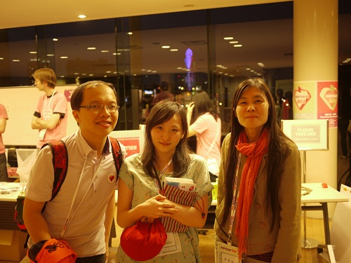
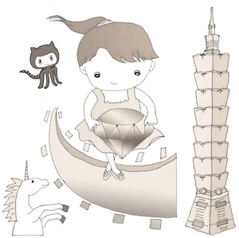
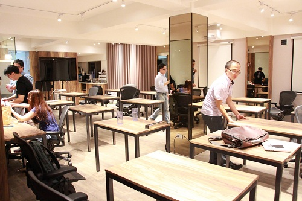
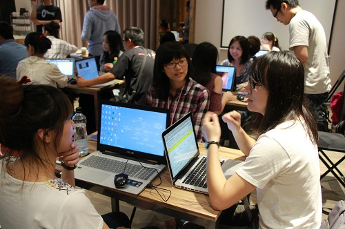
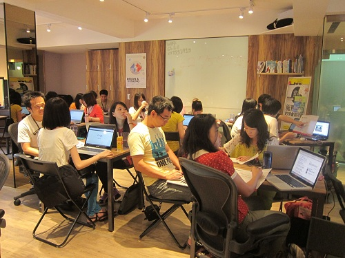
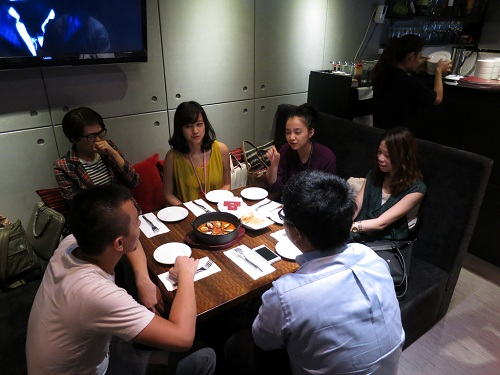
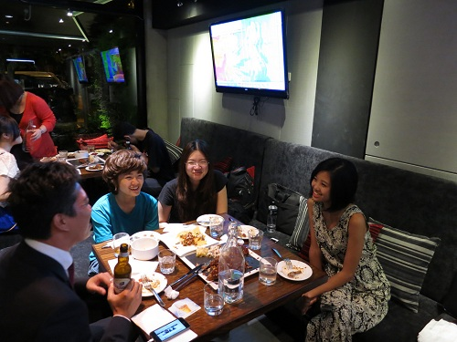
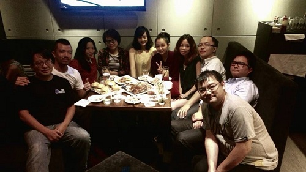

也紀念我們永遠的朋友 李士傑先生（Shih-Chieh Ilya Li）。
社群的力量 - Rails Girls Taipei 舉辦心得
以下是我和高見龍以及泰安共同主辦第一屆 Rails Girls Taipei 活動的心得。
Rails Girls 社群
有關於 Rails Girls 社群的介紹，請參考 Open Foundry 或 Inside 的介紹文章，在此就不再儹述。
緣起
女性，在台灣的程式設計相關的社群活動裡，算是屬於「稀有動物」的範疇。
一般來說、各大程式設計相關的研討會中，女性會眾的比例通常在百分之三或以下，所以一開始知道有 Rails Girls 活動（或著也可以說是一個社群）時並不是特別感興趣；轉捩點是四月和高見龍一起開有心人課程時，發現女性學員的參與是超出意外的多（約佔全部學員的四分之一），讓我們重新考慮舉辦這個活動的可能性。我研究了一下之後，發現 Rails Girls 這樣的國際活動是可以自由申請主辦的，因此在五月初準備 Rubykaigi 2013 的行程與演講時，就試著填寫了 Rails Girls 主網站上的申請表單，Rails Girls 的創辦人 Linda Liukas 也很快的就回應我，讓我加入了世界各地 Rails Girls 活動的主辦群中。
加入「世界各地的Rails Girls主辦群」之後，便會被加入 Railsgilrs.com 網站的 Github Repository，具有使用 Repository 內的圖片、素材相關資源、修改或新增網站的內容的權限；除此之外，還會被加入 Rails Girls 的 maillist，隨時可以和世界各地的 Rails Girls 主辦人討論交流。除了上述的資源之外，其它活動所需的物資都必須由當地的主辦人自行張羅。
在日本的見聞
我在五月底至六月初和高見龍一同前往日本參加 Rubykaigi 2013 時，有幸和日本 Rails Girls 的主辦人柴田博志先生討論了如何教不會程式的女性朋友上手 Rails 的方式，他講到了一個重點：「藉由 copy & paste，讓學員獲得成就感」。
在 Rubykaigi 三天的議程中，我們觀察到女性會眾的比例不只 3%，而是遠超過 5% 的，我們也在 Rubykaigi 會場和許多女性會眾交流，發現其中不乏原本不具程式經驗，卻因為參加過 Rails Girls 活動後，主動來參加 RubyKaigi 的女性會眾；而在 Rubykaigi 後一天舉辦的 Ruby Hiroba 的主題活動 Rails Girls, more extended 中，同行的高見龍也現場觀察了日本這邊的活動情形，如同其名「more extended」所示，這場活動可說是 Rails Girls 活動的進階版，進行方式是採取由學員選擇自己有興趣的主題，布論前端或後端技術，和熟練這些主題的教練們進行一對二、或一對三的教學。我們在現場就近直接觀察 Rails Girls, more extended 活動教學的情形，對於我們這次在台北舉辦 Rails Girls Taipei 也很有幫助，而整個 Rubykaigi 3 + 1 天的活動之中的所見所聞，也更增加了我們的信心和決心！

▲圖一：在 RubyKaigi 會場和 Rails Girls 的學員中澤（中）以及知名的 rubyist Yamane（右）合照。
開始籌辦
從日本回來之後我們都一直很忙碌，直到七月才有空開始規劃籌辦 Rails Girls Taipei。除了本來就決定要一起主辦的高見龍之外，剛好社群的朋友泰安對於這個活動也很有興趣，因此也加入了主辦的行列。
泰安的夫人本身也是一位業餘的畫家，很熱心地幫 Rails Girls 網站畫了 Logo！

▲圖二：Rails Girls Taiwan Logo。
尋找贊助廠商
由於這個活動的創辦人規定此活動不能向學員收取參加費用，所以最重要的是尋找肯支持的贊助廠商。我們想到之前參與 Rails 課程的學生阿姿，是國內以女性為主要服務對象的網站中非常知名且歷史悠久的非常婚禮 verywed 的員工，由於該公司是台灣極少數以女性員工為主的網路公司，程式開發都是以女性員工佔多數，於是請她幫忙介紹引薦該公司的老闆與技術主管，闡明 Rails Girls 的宗旨後，verywed 也欣然同意贊助本次活動。非常感謝支持！
場地選擇
一開始由於並不知道會有多少人報名，決定以不用太大、小而精巧的場地為主要的考量，就選擇了在各大程式語言社群聚會場地中頗負盛名的 CLBC 創意無極限商業社群為第一順位的場地選擇；在洽談之後預約到了場地，並也獲得老闆 Tyler 的同意讓我們用公益團體的優惠價格計費，也感謝 CLBC 的支持！

▲圖三：場地是一個活動的根本！先動手佈置吧！
報名狀況
先前的活動籌備討論，讓大家最擔心的就是會沒有學員報名，畢竟台灣的現狀就如前面所提，參與程式設計社群的女性成員是非常稀少的。但是報名狀況超出我們想像，8/13 中午開放報名後，不到 2 小時就超過了 150 人，在第二天下午時更超過 320 人報名，因此只好提前關閉註冊，接下來篩選學員的工作反而是最花時間的，大概花了將近十天在 review 報名資料上，由於場地限制的因素，最後只能選出 31 位的學員。
參與的學員都有著臥虎藏龍的資歷，除了有各界 UI、UX 或是網頁設計師之外，有位學員甚至曾經在百度這種超巨型網路公司工作過，也有學員為了參加活動，特地從台中搭高鐵參加。更值得一提的是，一位來自花蓮數位機會中心的老師，為了將數位知識傳承到偏遠鄉區，特地不辭勞苦地從東部北上來參加活動。
參與學員審查標準
參與學員的審查標準也是我們在籌辦活動中非常重視的部分。除了去了解 Rails Girls 創立的宗旨、原意之外，也參考了日本的審查標準。我們希望來參與 Rails Girls 的是比較沒有其它程式經驗的人，也請參與學員在自我介紹中說明以下兩件事，做為我們的審查標準：
- 為什麼妳想參加這個活動？
- 讓我們了解妳是一個怎樣的人？
事前準備
雖然我已經有幾次 Ruby 的教學經驗，不過要教會一個完全的新手，可不是沒準備就能夠完成的任務。這次我們決定由一位教練負責 2 位學員，便從社群徵求了 15 位朋友來擔任教練的工作，並在 Ruby Tuesday #25 的會後進行了第一次的討論。
決定了教學方向後，教材的部份就由泰安負責主編，其他教練協助編輯，成果可以在 Github 上看到；並請了一位曾公費留學歐洲、英文非常流利的教練 @JuanitoFatas 幫忙翻譯了 Rails Girls Guides 為主的很多教學文件。透過社群朋友的力量，讓 Rails Girls Taipei 雖然是首次主辦，但在各方面的規模與完整性並不會輸給國外。
現場狀況
雖然我已經主辦過如 RubyConf Taiwan 這樣的年度國際研討會，但第一次主辦完全以女性學員為主的活動，不免還是會擔心出席率等等的問題。不過最後活動是一切順利，教練和學員的互動也出乎意外的良好，可能是因為女生之間一起學習的關係，一般程式設計的社群中，第一次參與的女性會眾通常會集體沉默的現象，在這邊完全沒出現！學員們也都很珍惜這次機會，全程參與，也沒有遲到早退的問題，活動非常順利圓滿，真是可喜可賀！

▲圖四：Rails Girls Taipei 活動照片。

▲圖五：Rails Girls Taipei 活動照片。
Absoutely After Party!
類似這樣的社群聚會，除了教學之外，活動的目的之一便是促進學員和教練之間的互動，讓學習的熱忱能夠在活動結束之後保持不間斷。於是在活動之後所舉辦的 After Party，也列在官方的 Guides 內，因此事先就宣布並徵詢學員的參與意願。
After Party 場地的選擇，因為想要維持品質以及營造互動的氛圍，決定要以 Lounge Bar 為主，經友人推薦之下，選擇了費用上不算便宜的 TRIBECA，由於價格布便宜、學員需要自費，原本以為會變成教練與 Staff 為主的聚會，最後也是令人意外地有超過一半的學員參加！大家也都相談甚歡，到了十點才散會。

▲圖六：Rails Girls Taipei After Party。

▲圖七：Rails Girls Taipei After Party。

▲圖八：Rails Girls Taipei After Party。
會後感想
Ruby 真的是一門神奇的語言啊，原本只是基於想要改變社群活動參與者的性別分布不均的心情，從國外引進並舉辦了 Rails Girls Taipei，卻得到了遠遠出乎意料的反應與成果，看來 21 世紀的程式設計學習之路仍然是一個熱門且不變的趨勢！今後我們也會繼續舉辦並支持這個活動，非常感謝活動過程中一路相挺的社群朋友們，謝謝大家！
Special


Address：No.128, Sec.2, Academia Rd., Institute of Information Science, Academia Sinica, Nangang District, Taipei City 11529, Taiwan (R.O.C).
Privacy Policy. Terms-of-use

Comments
網址為：
clbc.tw/.../
謝謝您！ =-)
组织活动的确不容易，特别是公益 的活动，非常感谢台湾同胞的尝试 和分享